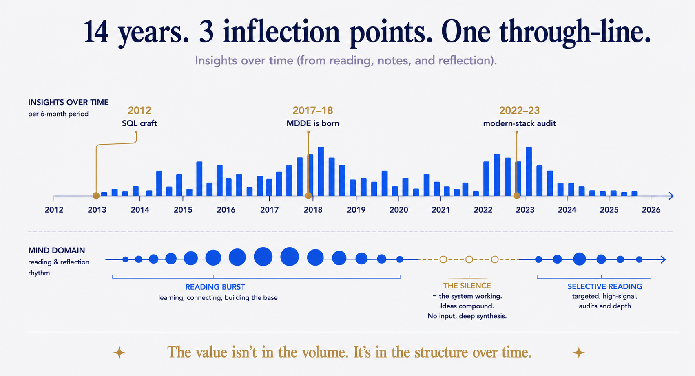

This morning I opened my Readwise Reader library and counted. Over 20,000 documents. Almost all of it was an auto-pulled feed of RSS and newsletters — I had opened maybe one in twenty. Even my "inbox" — the shortlist, the things I supposedly meant to get to — was a backlog of 12,000 items. Somewhere along the way, my read-later app had quietly become a read-never graveyard.
Most people would see that number and declare inbox bankruptcy. Delete everything, start fresh, promise to be more disciplined this time. That is the wrong move, because it treats the pile as a to-do list that failed. It is not a to-do list. It is a dataset — and buried inside it was signal I had been accumulating for fourteen years without ever looking at it.
The signal was already there
The real signal was tiny by comparison. Out of 20,000 documents, there were 390 books and articles I had actually highlighted — 5,799 highlights in total — plus a few hundred more I had deliberately saved by hand. I rarely highlight. So where I did, it mattered.
That sparseness is the point. A highlight is not a bookmark; it is a vote. It is the rare moment where I stopped, reached for the pen, and said: this. Because I do it so seldom, my highlights may be the highest-signal filter I own — better than any tagging system I could have designed, because every entry cost me something in the moment. You cannot backfill a highlight. I just left a trail of deliberate acts, and deliberate acts are exactly what Curated Sources are made of.
So instead of pointing AI at 20,000 documents and asking it to make sense of the noise, I pointed Claude at the 390 that carried a vote. I routed them into the five life-domains my vault already uses — data, mind, system, life, travel — and gave each domain its own AI agent with one job: synthesize. The recurring thought-leaders, ranked. The sources worth continuing to follow. Per-topic summaries. And a narrative of insight over time, built from the highlighted texts and the dates I saved them.
What came back was a mirror
In the data domain, one figure sat at the gravitational centre of everything: Roelant Vos. Article after article, year after year, my highlights kept orbiting his work. And his blog's stated purpose — "inspired laziness through Model Driven Design" — is strikingly close to the ancestor of my own Model-Driven Data Engineering brand. I had been reading that lineage for years without ever tracing it. The synthesis put a name on something I half-knew.
The insight-over-time narrative was stranger still. From the highlighted texts plus their dates, it reconstructed a fourteen-year arc I had never written down. 2012: hands-on SQL Server craft — the practitioner years. 2017 and 2018: a dense cluster where Data Vault (a warehouse-modelling method) and generate-from-metadata fuse — the cluster the synthesis reads as the point where MDDE takes shape, and the dates are consistent with that story. Then December 2022 through mid-2023: a sprint through the entire modern-data-stack wave — the trendy data tooling of the moment — and the highlights show me reading it skeptically. The standout saves are titles like "I have never advised a client to use dbt."
The mind domain told a different kind of story. An intense six-month burst of PKM reading in late 2022 and early 2023 — Tiago Forte, Nick Milo, Andy Matuschak — and then near-total silence. My first reaction was mild guilt: I abandoned the topic. The synthesis offered a kinder reading — the silence was the system working — and a gap in your data will always flatter you if you let it. But this one I can corroborate outside the reading data: the reading stopped, and the vault kept growing. I stopped reading about building a second brain because I had built one.
A caveat I owe you, and it is the whole discipline in one sentence: a model handed your own curation will find a narrative, and it will be coherent whether or not it is true. The test is whether the story points back to evidence you can check — a vault that exists, a highlight you can re-read. Treat everything else as hypothesis. A summary tells you what the documents say; reasoning over time tells you what you were doing — and when you changed — but only your own records can tell you whether the reason it offers is real.

The queue and the corpus
Here is the structural error every read-later app makes, and every one of us makes with it: it treats your reading history as a queue. A queue has one job — process the next item — and one failure mode: it grows faster than you drain it. Twelve thousand unread items is not a personal failing. It is the predictable end-state of a queue whose inflow is built to outrun your reading.
A corpus is a different object entirely. A corpus is a body of material you can interrogate, cross-reference, and synthesize. Nobody feels guilty about a corpus. Reframed, the pile split in two: a feed I could finally abandon without guilt, and buried inside it a fourteen-year annotation trail — the highlights and deliberate saves — which was the actual corpus. The relief did not come from redeeming twenty thousand documents. It came from permission to let most of them die, and attention on the few hundred that were always the point.
The magic move people wish for is "an AI that tells me what I think." The structure move that actually delivers it has three parts. Separate the curated signal from the feed noise — and trust your own sparse, deliberate acts as the filter, because they already are one. Give the corpus structure: domains, dates, sources. Then let the AI do the one thing structure makes possible — reason over time, not just summarize content.
The result is not a digest of what you read. It is a map of how you think and where your thinking is heading — because your reading, in aggregate, is a confession of what you actually care about. Mine confessed that MDDE did not appear from nowhere in 2018; my highlights show the lineage it grew from, traceable to a named source. Structure Beats Magic in its purest form: I did not need a smarter AI. I needed to stop treating my reading as a queue.
How it works
The pattern is small enough to run in an afternoon — mine cost a few dollars of AI and produced a queryable vault, a dashboard, and 36 article ideas, each traceable to a real source I read.
1. Curate — separate signal from noise. Do not process the whole library. Export only the items carrying a deliberate act: highlights, manual saves, notes. Your feed is noise by construction; your votes are signal by construction. In my case that cut 20,000 documents down to a few hundred that mattered. One honest limit: the trail only sees what the tools could see — the paper books, podcasts, and conversations you cared about are invisible to it.
2. Route into domains. Assign every item to a life-domain — mine are data, mind, system, life, travel. This is the structural move that makes synthesis honest: an agent reasoning about one coherent domain produces insight; an agent reasoning about everything at once produces mush.
3. Synthesize per domain. One agent per domain, four outputs each: the recurring thought-leaders, ranked; the sources worth following as Curated Sources going forward; per-topic summaries; and open threads — things you kept circling but never resolved.
4. Reason over time. This is the step almost everyone skips, and it is where the mirror appears. Feed the agent the dates alongside the texts and ask for the narrative. The prompt is almost that blunt: "Here are my highlighted items with their save-dates, grouped by domain. What was this person learning, when, and what does the sequence reveal?" Dates turn a pile of summaries into a trajectory. Then apply the caveat from earlier — make it point back to evidence you can check, or hold it as a hypothesis.
One instance of a family
Reading Intelligence is not a standalone trick. It is one member of a family I call Intelligence Systems: curate sources, structure them, let AI extract and validate — applied to a whole domain of life, turning raw history into something you can ask. Content Intelligence does it to everything I have written. Email Intelligence does it to twenty years of correspondence. People Intelligence does it to my contacts; Trip Intelligence to my travel history.
The domain changes. The structure move is identical. And each system feeds the others — the thought-leaders my reading surfaced are now reference profiles in People Intelligence, and the 36 article ideas flow straight into Content Intelligence. That is The Compounding Brain doing what it is built to do: every structured domain makes the next one cheaper to build and richer to query.
Everyone has a reading history. Almost nobody harvests it. The raw material is sitting in your read-later app right now, disguised as a backlog you feel bad about. It is not a backlog. It is one of the most honest records you own of what you actually care about. If you have highlighted for years, it is one afternoon of structure away from telling you. If you have not, the afternoon buys you less today — but it shows you what to start leaving: a trail of votes that compounds from the day you begin.